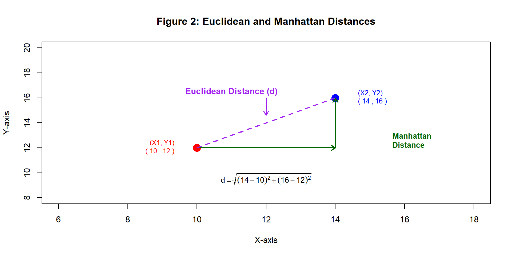
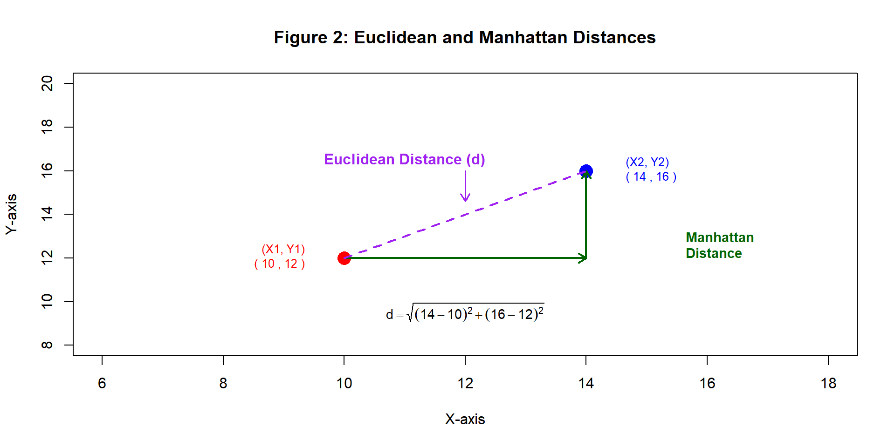
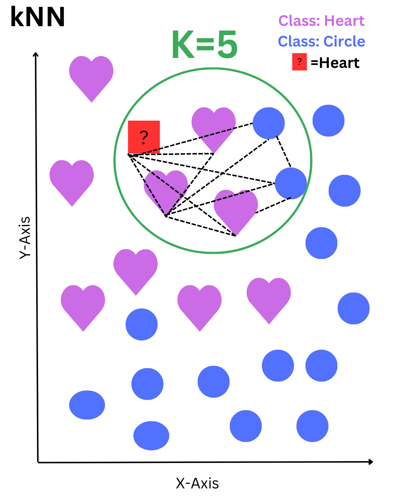
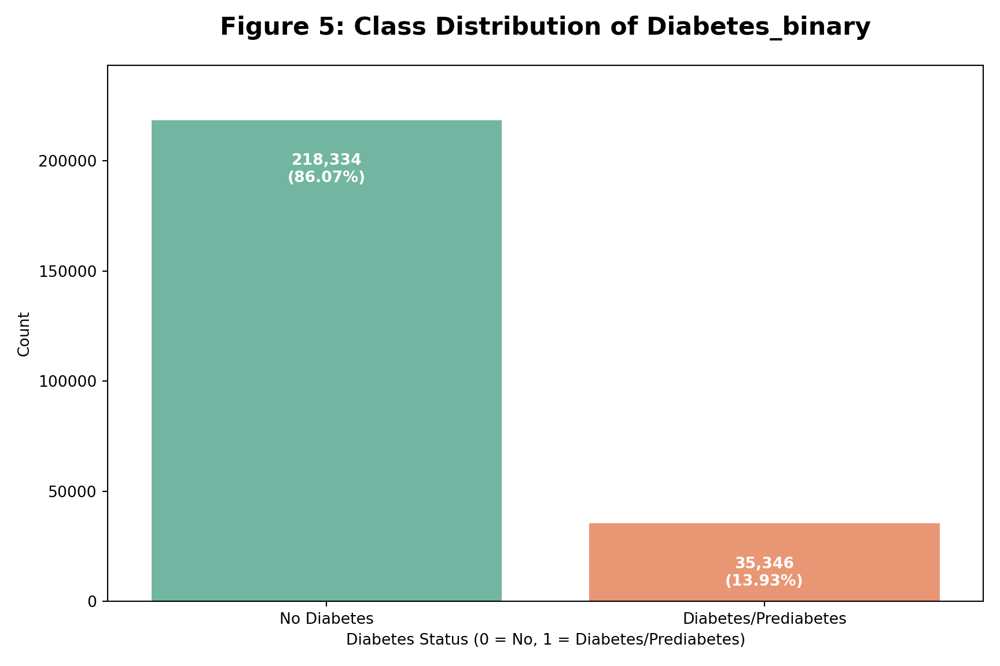

An Application of kNN to Diagnose Diabetes
2025-04-29
In healthcare, kNN has shown promise in predicting chronic diseases like diabetes (Suriya and Muthu 2023) and hypertension (Khateeb and Usman 2017).
In this project, we focus on how kNN can be applied and optimized to predict diabetes, a critical and growing public health issue.
- Diabetes affects millions worldwide. Early detection can improve outcomes.
- Machine learning, especially interpretable models like kNN, can support diagnosis.
- Our project explores:
- How different k values, distance metrics, and preprocessing techniques affect kNN’s performance.
- Whether kNN is competitive with other models for this task.
Well-suited for medical datasets with small to medium size
Easy to interpret — great for health professionals
Flexible with minimal assumptions
Can impute missing data and detect patterns
k-Nearest Neighbors (kNN) is a non-parametric, instance-based learning algorithm
It is a lazy learner — no explicit training phase is required
Instead, it classifies new data based on similarity to existing labeled points (Zhang 2016)
1. Distance Calculation:
Measures similarity using metrics like Euclidean or Manhattan distance
2. Neighbor Selection:
Hyperparameter k defines how many nearby points to consider
3. Majority Voting:
The most frequent class among the k nearest neighbors determines the prediction
kNN identifies the nearest neighbors by calculating distances between points.
Euclidean distance: (Theerthagiri, Ruby, and Vidya 2022) \[ d = \sqrt{(X_2 - X_1)^2 + (Y_2 - Y_1)^2} \]
Manhattan distance: (Aggarwal et al. 2015) \[ d = |X_2 - X_1| + |Y_2 - Y_1| \]

The red square represents a data point to be classified. The algorithm selects the 5 nearest neighbors within the green circle—3 hearts and 2 circles. Based on the majority vote, the red square is classified as a heart.

Data Source: CDC Diabetes Health Indicators
Collected via the CDC’s Behavioral Risk Factor Surveillance System (BRFSS)
Dataset contains 253,680 survey responses
Covers 21 features: demographics, lifestyle, healthcare, and health history
Target: Diabetes_binary
(0 = No diabetes, 1 = Diabetes/Prediabetes)
Data Quality
No missing values
24,206 duplicate rows detected
Outliers & Scaling Sensitivity
BMI, MentHlth, PhysHlth had extreme values
kNN is highly sensitive to scale
Feature Relationships
No multicollinearity (r < 0.5)
All features retained for now
Early Insight
Higher BMI in diabetic cases, but overlapping range
Used as a predictor along with other features
Key Points
Significant class imbalance observed
Majority class: No Diabetes (0) – 86.07%
Minority class: Diabetes (1) – 13.93%
Impact on Modeling
Imbalance can bias predictions
Models may underpredict diabetes cases

Removed 24,206 duplicate rows
Diabetic class increased from 13.9% → 15.3%
Kept ordinal features as numeric
Age, Education, Income, and GenHlth retained due to natural ordering
Scaled Features with Outliers
BMI, MentHlth, PhysHlth scaled with StandardScaler & Robustscaler
Handled class imbalance
Applied SMOTE to generate synthetic diabetic samples
➡️ Final dataset: clean, scaled, and balanced
| Model | k | Distance | Weights | Scaler | SMOTE |
|---|---|---|---|---|---|
| kNN 1 | 5 | Euclidean (p=2) | Uniform | StandardScaler | No |
| kNN 2 | 15 | Manhattan (p=1) | Distance | RobustScaler | No |
| kNN 3 | 10 | Euclidean (p=2) | Uniform | StandardScaler | Yes |
| kNN 4 | 15 | Euclidean (p=2) | Distance | StandardScaler | Yes (Feature Selection) |
| Model | k | Distance | Weights | Scaler | SMOTE | Accuracy | ROC_AUC | Precision_1 | Recall_1 | F1_1 |
|---|---|---|---|---|---|---|---|---|---|---|
| kNN 1 | 5 | Euclidean (p=2) | Uniform | StandardScaler | No | 0.83 | 0.70 | 0.41 | 0.21 | 0.27 |
| kNN 2 | 15 | Manhattan (p=1) | Distance | RobustScaler | No | 0.84 | 0.75 | 0.45 | 0.16 | 0.23 |
| kNN 3 | 10 | Euclidean (p=2) | Uniform | StandardScaler | Yes | 0.69 | 0.73 | 0.28 | 0.64 | 0.39 |
| kNN 4 | 15 | Euclidean (p=2) | Distance | StandardScaler | Yes (FS) | 0.78 | 0.88 | 0.73 | 0.88 | 0.80 |
Best configuration: kNN 4
k = 15, Euclidean distance, distance weighting
StandardScaler, SMOTE, and feature selection
Highest Weighted F1 Score: 0.80
Achieved recall = 0.88, precision = 0.73
🩺 Most effective at identifying diabetic class (1)
| Model | SMOTE | Accuracy | ROC_AUC | Precision_1 | Recall_1 | F1_1 |
|---|---|---|---|---|---|---|
| KNN | Yes | 0.78 | 0.88 | 0.73 | 0.88 | 0.80 |
| Decision Tree | Yes | 0.72 | 0.80 | 0.70 | 0.78 | 0.74 |
| Decision Tree | No | 0.86 | 0.81 | 0.52 | 0.15 | 0.24 |
| Random Forest | No | 0.87 | 0.82 | 0.59 | 0.13 | 0.21 |
- kNN achieved the highest F1 score (0.80) with strong recall on the diabetic class
- Decision Tree with SMOTE performed comparably but slightly lower on F1
- Random Forest had highest accuracy, but poor recall (0.13) shows it struggled to detect diabetic cases
Tree-based models offer interpretability, but may need tuning or resampling for minority detection
This plot compares the ROC curves for all four models.
kNN with Feature Selection performs best (AUC = 0.88), followed by Random Forest.
ROC Curve
This project demonstrated that the k-Nearest Neighbors (kNN) algorithm can be an effective tool for disease prediction when properly tuned and supported by strong preprocessing.
Despite its simplicity, kNN achieved competitive results through careful configuration — including scaling, handling class imbalance, and feature selection.
Its interpretability, flexibility, and performance make it a practical choice in healthcare settings, where fairness and transparency are essential.
Ultimately, this work highlights how even basic algorithms, when thoughtfully applied, can deliver meaningful insights in real-world medical data.